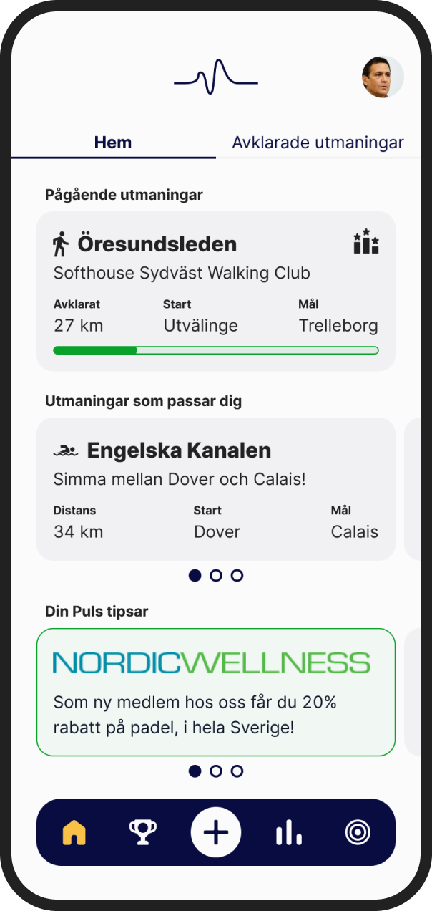

Din Puls

Project type: End-to-end mobile app
Role: Sole designer
Industry: Industrial
Tools: Figma
Duration: Q4 2023
Role: Sole designer
Industry: Industrial
Tools: Figma
Duration: Q4 2023
The client, a leading construction company, requested a mobile application for crane operators to document daily inspections of lifting equipment, which were previously done using paper and pen. This traditional method was inefficient and prone to errors. The goal was to digitize the inspection process, allowing operators to input data directly into a mobile app. These reports would then be exported as PDFs and forwarded to the responsible person at their workplace. As the sole UX/UI designer on this project, I was responsible for the entire design process, from initial research to final implementation. I directly communicated with the client to understand their requirements and ensure that the app met their needs.